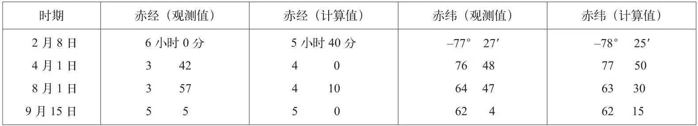
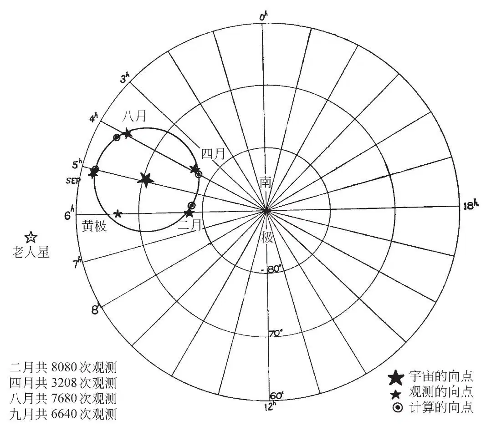
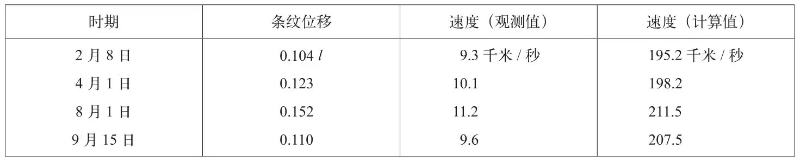

英文
英文米勒
编者按
迈克尔逊和莫雷于1892年用他们在美国俄亥俄州建造的光学干涉仪进行了以太漂移实验，实验表明原先假设充满整个宇宙的以太其实并不存在。这篇文章利用相似的仪器测量了太阳系在宇宙中的“绝对”运动。使用“绝对”这个术语表明作者没有考虑到相对论，但是实验结果的确表明了太阳系是如何相对于周围星系运动的。 英文
1878年麦克斯韦首次提出了以太漂移实验，1881年迈克尔逊发明的干涉仪使该实验成为可能。虽然这个实验可以适用于探测地球总体的绝对运动，但实际上它仅在探测人们所熟知的地球运动的轨道分量时被应用过。1925～1926年，我在威尔逊山上进行了首次观测，这次观测无论从范围上还是完备性上都足以用来确定地球的绝对运动。这些观测数据包含大约200,000个单独的干涉条纹位置的读数。 英文
众所周知，干涉仪中可观察到的以太漂移是一个二阶效应；通过观测可以准确地确定绝对运动的路线，但无法确定沿该路线运动的方向。 英文
1925年12月，即威尔逊山的观测完成之前，美国科学促进会在堪萨斯城召开了一个会议，会议上的一个报告指出，实验证明，太阳系在宇宙中是朝着一个北向点运动的；尽管这个实验似乎应当足以观测到轨道运动的效应[1]，但是这一目的并未达到。 英文
对银河系中恒星的自行和视向运动的研究表明，相对于我们本星系团，太阳系是大致朝着武仙座北向点的方向运动的。这个向点和前述报告中的以太漂移观测所示出的方向接近，这似乎是证明其正确性的有力证据。也许，这正是导致接下来的研究都假设绝对运动是沿着所示路线向北的原因。然而在这种假定下，所有可能的组合和调整都不能使计算得到的轨道和宇宙运动的联合效应与实际的观测结果相符。 英文
1932年秋，人们基于另外一种可能性重新对这个问题进行了分析，即太阳系沿着之前确定的宇宙轨道运动，但方向相反，也就是向南运动。这一次得到了完全一致的结果，从而第一次定量地确定了太阳系的绝对运动，同时也首次明确地探测到了地球在其轨道内的运动效应。 英文
地球的绝对运动可以被看成是两个独立运动分量的和。其中一个是绕太阳的轨道运动，其大小和方向都是已知的。在此项研究中，地球轨道运动的速度取为30千米/秒，其方向在一年中连续变化，并总是沿着轨道切线的方向。第二个分量是太阳和太阳系在宇宙中的运动。假设该运动的大小和方向都是恒定的，但均属未知；确定这些量正是这项实验的目的。在进行观测的纬度处，地球绕轴的自转将产生一个小于0.4千米/秒的速度，这相对于地球绝对运动速度而言可以忽略不计；但是地球自转对运动的视方向有着重要的影响，这也是求解此问题时的一个重要因素。由于轨道运动分量在方向上持续变化，所以要得到通解很困难；但是通过观测地球在轨道不同位置的合运动，从而得到实验解还是可行的。为此，必须在一年中选择三个或者更多个不同的时期，确定以太漂移效应的大小和方向在24小时内的变化。这项观测在威尔逊山上进行，其观测的时期分别是：1925年4月1日、8月1日、9月15日以及1926年2月8日。 英文
地球绝对运动所指向的天球上的那个点被称为地球运动的向点。天球就如同一颗恒星，这个点可由天球上的赤经和赤纬确定，通过干涉仪的观察结果，利用实测天文学的公式可以直接确定这个点的位置。纳索教授和莫尔斯教授的文章已经对确定地球运动的向点给出了理论思考[2]。 英文
表1给出了假定太阳系是在向南运动的情况下，利用干涉仪的观测结果得到的四个时期地球在宇宙中运动相应向点的赤经和赤纬，以及用以太漂移理论计算得到的相应值。 英文
表1．地球在宇宙中合运动的向点位置

宇宙分量的向点 赤经= 4小时56分，赤纬= –70°33′
由上表中四个合运动的向点可以确定宇宙分量的向点，它也是太阳系作为一个整体运动的向点。这个向点的位置是赤经4小时56分，赤纬–70°33′。 英文
让我们继续天文学的描述，在得出“光行差轨道”的根素后，即可以用其计算出四个观测时期合运动的向点的视位置。附图是天球南拱极区（图1），图中大星号表示宇宙运动的向点，四个圆圈表示计算得到的向点位置。这些向点必须落在计算得到的光行差轨道的闭合曲线上，光行差轨道的中心即为地球运动宇宙分量的向点。此光行差轨道是地球轨道在天球上的投影，在这种情况下近似为圆。在四个时期观测到的向点在图中以小星号表示。图中还标出了黄极和老人星的位置。计算和观察得到的视向点的高度吻合似乎有力地证明了用以太漂移观测来求解地球绝对运动以及地球轨道运动效应的正确性，而对于后者迄今为止尚未得到实验证明。 英文

图1．太阳系绝对运动顶点的观测位置和计算位置 英文
令人惊奇的是，虽然以太漂移这种微弱的效应被公认为是难于观测且其结果会有很高的不确定性，但最后却得到了计算值和观察值如此高度一致的结果。也许，我们可以这样解释：这些观察结果实际上是由大量独立的位置测量平均得出的，二月有8,080次单次测定，八月有7,680次，九月有6,640次，而四月有3,208次。 英文
太阳运动的向点位于南天的剑鱼座内，处在天空中第二亮的老人星以南约20°处，著名的大麦哲伦星云的中间。该向点偏离黄极7°左右，而仅偏离太阳系的不变平面的6°，因此太阳系的运动几乎是垂直于其不变平面的。这表明，太阳系可以被看作是一个动力盘，这个圆盘被牵引着穿过某种阻尼介质，从而使其与运动路线垂直。 英文
我们通常假设地球在宇宙中的运动被投影到干涉仪的平面上，通过观测由于地球的自转和绕太阳的公转所引起的这一投影分量的变化可以确定该运动的方向。观测到的效应的大小和方向均和假设以太静止时，即以太不被运动的地球所扰动时所预期的变化方式和比例相符。但是，观测到的效应的值总比预期的小，这表明相对运动速度的减小，这似乎表明载着干涉仪的地球所穿过的以太并不是绝对静止的。已知地球的轨道速度为30千米/秒，而根据观测到的效应成比例变化而确定的太阳系的宇宙速度为208千米/秒。 英文
表2给出了干涉仪绕其轴旋转时观测到的条纹系统的周期性位移，以及相应的地球和以太的相对运动速度。 英文
表2．位移和速度

假设干涉仪所测得的宇宙分量和轨道分量都以相同的比例减小，最后一列给出的是在静止以太理论下的预期速度。平均减缩因子k=0.0514。观测到的效应的方位角由于地球的绕轴自转存在周日变化。观测到的方位角振荡在大小和时间上与理论结果一致，但是由于一些未知原因，振荡轴偏离了子午线。为了解释这里给出的结果，似乎必须要接受修正后的洛伦兹–斐兹杰惹收缩理论，或者像斯托克斯所提出的那样，假设以太有黏性或具有拖曳效应。 英文
尽管这里给出的结果与普遍的观念相反，但却与1887年迈克尔逊、莫雷所进行的原始观测以及1904～1905年莫雷、米勒所进行的实验观测完全一致。另外，我们已经在其他刊物[3]上发表了相关的内容，包括以太漂移实验的发展、利用干涉仪进行实验的相关方法，以及进行观测及其归算过程的完整说明等。 英文
（王静 孙惠南 翻译；邓祖淦 审稿）
* 本论文发表于1933年9月13日在莱切斯特举行的英国科学促进会会议A分会场（数学与物理科学）。